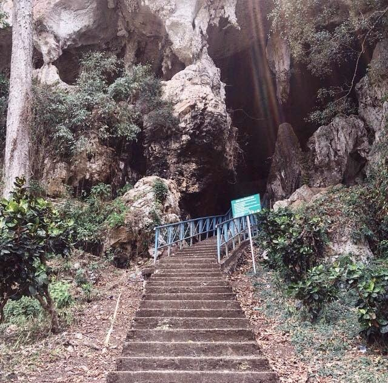
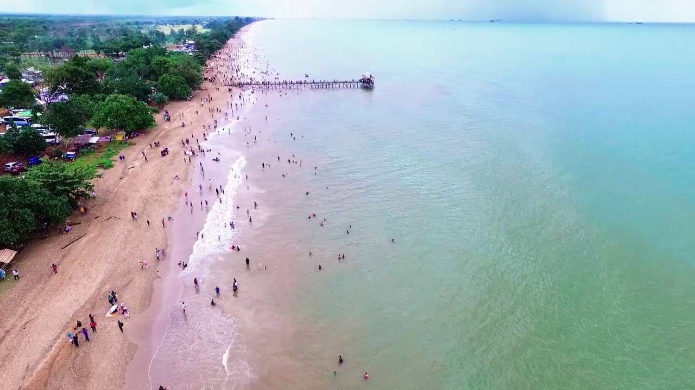

Labirin Palaihari adalah salah satu tempat wisata buatan berupa taman yang terletak di Tambang Ulang, Tanah
Laut, Kalimantan Selatan. Daya tarik utama tempat wisata ini adalah sensasi memasuki lorong lorong labirin
dari tumbuhan dengan tujuan mencari jalan keluar. Pada lokasi yang sama pengunjung juga dapat melihat rusa
tutul dan menikmati danau buatan. Pengunjung juga dapat befoto dari atas dengan latar belakang labirin di atas
menara setinggi 3,5 m
Jam buka dan biaya masuk Senin-jumat mulai jam 13.00 hingga sore, sedangkan hari sabtu buka dari
jam 08.00
pagi. Biaya masuk pada tahun
2015 tercatat sebesar Rp. 3.000/orang dari pengurus taman sebagai biaya pemeliharaan, kebersihan dan biaya
pakan ternak di BP3T
Pada awalnya BP3T bukanlah tempat rekreasi yang dibuka untuk umum. Melainkan untuk kebutuhan
kelompok/instansi....
daerah dengan beragam kegiatan yang berhubungan dengan pertanian, perikanan dan sektor agro wisata. Namun,
dalam perjalanannya BP3T melakukan beragam inovasi dan pengembangan seperti lahan out bound, beragam jenis
pelatihan mulai dari pertanian hingga perikanan dan termasuk pula pengembangan lahan labirin ini. Dan pada
akhirnya BP3T menjadi salah satu objek wisata nomor 1 yang banyak dikunjungi di wilayah Pelaihari selain
wisata pantainya.
Pasar Terapung Lok Baintan
Pasar Terapung Lok Baintan atau Pasar Terapung Sungai Martapura adalah sebuah pasar terapung tradisional yang
berlokasi di desa Sungai Pinang, kecamatan Sungai Tabuk, Banjar. Secara umum, Pasar Terapung
Lok Baintan tak beda dengan Pasar Terapung di muara Sungai Kuin/Sungai Barito. Keduanya sama-sama pasar
tradisional di atas jukung yang menjual beragam dagangan, seperti hasil produksi pertanian/perkebunan dan
berlangsung tidak terlalu lama, paling lama sekitar tiga hingga empat jam. Pasar terapung ini sudah ada
sejak zaman Kesultanan Banjar.
Di sepanjang pesisir aliran Sungai Martapura Lokbaintan terlihat konvoi perahu menuju lokasi pasar terapung.
Perahu ini milik pedagang dan petani yang akan memasarkan hasil kebun mereka. Mereka berasal dari berbagai
anak Sungai Martapura,....
seperti Sungai Lenge, Sungai Bakung, Sungai Paku Alam, Sungai Saka Bunut, Sungai
Madang, Sungai Tanifah, dan Sungai Lok Baintan.
Untuk menuju pasar terapung Lok Baintan dari pusat kota bisa ditempuh dengan dua alternatif. Alternatif
pertama menyusuri sungai Martapura dengan menggunakan klotok, sejenis sampan bermesin. Dengan klotok,
perjalanan dari pusat kota menuju pasar terapung terbilang cepat karena membutuhkan waktu 30 menit.
Alternatif
kedua dengan menggunakan kendaraan darat seperti mobil. Namun, untuk alternatif kedua membutuhkan waktu
lebih
panjang yakni satu jam untuk mencapai pasar terapung. Hal itu disebabkan medan perjalanan yang cenderung
berat
dan berliku-liku.
Aktivitas perdagangan dimulai pukul 06.00 pagi sampai dengan pukul 09.30 WITA. Pedagangnya didominasi
perempuan dengan memakai tutup kepala. Mereka menjual berbagai dagangan, seperti sayur-mayur,
buah-buahan, kue-kue tradisional, dan lain-lain. Di pasar terapung ini masih berlaku sistem barter, dan uang
bukan merupakan alat transaksi utama di pasar terapung ini.
Umumnya, dagangan yang akan dibarter adalah hasil bumi berupa sayur mayur dan buah-buahan. Besaran dan
keberimbangan jumlah hasil barter tergantung kesepakatan antarkedua belah pihak. Jika sepakat, maka
masing-masing akan mendapatkan barang sesuai keinginan dan selanjutnya digunakan untuk keperluan pribadi di
rumah.
Gua Batu Hapu

Gua Batu Hapu adalah objek wisata yang terletak di dekat pasar Binuang tepatnya di desa Batu Hapu, kecamatan
Hatungun, Tapin yang bisa ditempuh 43 Km dari Kota Rantau dan 154 km dari Kota Banjarmasin. Goa Batu Hapu dari
pasar Binuang masuk sejauh 16 km dengan jalan yang sudah cukup baik, ditempuh dengan jalan santai sambil
menikmati pemandangan kehidupan pedesaan dan nuansa alam pegunungan selama 30 menit, goa ini terletak
dipegunungan sehingga yang mempunyai hobi tantangan panjat tebing disinilah nyalinya diuji, tetapi risiko
ditanggung sendiri karena belum diasuransikan, masyarakat di sekitar goa siap bermitra dengan wisatawan yang
berkeinginan bermalam sambil menikmati makanan dan kehidupan masyarakat pedesaan.
Gua Batu Hapu merupakan goa yang mempunyai panorama luar biasa yang mempunyai stalagnit dan stalagmit....
menghiasi dalam goa yang dapat menggugah kebesaran Tuhan Yang Maha Esa dalam ciptaan-Nya sebagai pelajaran
pengetahuan alam, goa ini telah mendapatkan sentuhan perbaikan dan penataan, Pemerintah Daerah sehubungan
kerusakan yang diakibatkan keserakahan oknum manusia yang hanya mengejar keuntungan ekonomi sesaat tanpa
mensyukuri nikmat lainnya yang disediakan oleh alam.
Menurut legenda yang sampai sekarang menjadi mitos masyarakat setempat tentang asal usul terjadinya Goa Batu
Hapu ini adalah Raden Penganten yang dikutuk oleh ibunya, Diang Ingsun menjadi batu dan di antara pecahan
kapalnya menjadi gunung dan goa yang ada sekarang ini.
Pantai Asmara

Pantai Asmara merupakan akronim dari Asam Asam Muara. Salah satu keunggulan pantai ini adalah kondisinya
yang terbilang cukup bersih, dengan pasir pantai berwarna putih, sehingga membuatnya banyak dikunjungi
wisatawan lokal Banjarmasin maupun luar daerah, terutama di akhir pekan atau musim liburan.
Di sini, Anda bisa bermain air dan berenang sepuasnya karena ombaknya cukup tenang. Anda juga bisa berfoto di
tulisan LOVE yang instagramable banget, bermain pasir, atau naik kano yang bisa Anda sewa pada pengelola
setempat. Selain itu, Anda akan menemukan dermaga mini yang terbuat dari kayu untuk berfoto bersama
teman-teman dan keluarga, atau menyewa speed boat dengan biaya sewa Rp20.000,- per orang.
Untuk bisa masuk ke Pantai Asmara, Anda diharuskan membayar tiket masuk sebesar Rp 10.000 per orang.... dewasa.
Sementara, jika Anda membawa kendaraan pribadi, harus membayar biaya parkir sebesar Rp 10.000 per unit untuk
kendaraan roda empat atau mobil dan Rp 5.000 per unit untuk kendaraan roda dua.
Karena bernama Pantai Asmara, pengelola juga berkreasi dengan menyediakan tempat untuk meletakkan gembok
cinta. Konon, gembok cinta ini bisa dijadikan simbol bagi mereka yang ingin “menyimpan” rasa sayangnya
kepada
seseorang. Sekilas, gembok cinta ini mirip dengan di Paris atau di Sukabumi. Area parkir di sini cukup luas
dan aman, Di sekitar area parkir, terdapat pula banyak kedai yang menjual makanan khas Kalimantan Selatan.
Pengelola juga sudah menyediakan toilet dan kamar mandi yang kebersihannya cukup terjaga, termasuk tersedia
pula air bersih untuk membilas air asin yang membuat badan lengket. Untuk menuju pantai ini, dari
Banjarmasin,
Anda dapat melanjutkan perjalanan ke Pelaihari, kemudian diteruskan menuju arah Jorong atau Batulicin dengan
mengikuti jalan utama. Setelah sampai Jorong, Anda nantinya akan bertemu papan penunjuk bertuliskan “Pantai
Asmara” di kanan jalan. Dari spot ini, perjalanan ke pantai berjarak sekitar 8 km.
Candi Agung
Candi Agung adalah sebuah situs candi Hindu yang beratap yang terletak di kawasan Sungai Malang, kecamatan
Amuntai Tengah, Kota Amuntai, Kalimantan Selatan. Di sekitar candi pernah ditemukan tiang kayu ulin dan
pecahan genteng. Candi ini diperkirakan peninggalan Kerajaan Negara Dipa yang keberadaannya sezaman dengan
Kerajaan Majapahit.
Candi Agung di Amuntai merupakan peninggalan Kerajaan Negara Dipa yang dibangun oleh Empu Jatmika abad ke XIV
Masehi. Dari kerajaan ini akhirnya melahirkan Kerajaan Negara Daha di Negara dan Kesultanan Banjarmasin.
Menurut cerita, Kerajaan Hindu Negara Dipa berdiri tahun 1438 di persimpangan tiga daerah aliran sungai yaitu
sungai Tabalong, sungai Balangan, dan sungai Negara. Cikal bakal Kerajaan Banjar itu diperintah oleh Maharaja
Suryanata dan Putri Junjung Buih dengan kepala pemerintahan Patih.... Lambung Mangkurat. Negara Dipa kemudian
berkembang menjadi Kota Amuntai.
Dalam tahun 1967 di Kota Amuntai, waktu diadakan panggalian situs kepurbakalaan, ditemukan orang dasar candi
dan benda-benda kepurbakalaan. Tempat yang digali itu disebut penduduk Gunung Candi dan candi
yang dasarnya itu disebut Candi Agung. Menurut ceritera rakyat yang hidup disana Candi Agung dibangun oleh
Mpu
Jatmika.
Candi Agung diperkirakan telah berusia 740 tahun. Bahan material Candi Agung ini didominasi oleh batu dan
kayu. Kondisinya masih sangat kokoh. Di candi ini juga ditemukan beberapa benda peninggalan sejarah yang
usianya kira-kira sekitar 200 tahun SM. Batu yang digunakan untuk mendirikan Candi ini pun masih terdapat di
sana. Batunya sekilas mirip sekali dengan batu bata merah. Namun bila disentuh terdapat perbedaannya, lebih
berat dan lebih kuat dari bata merah biasa. Batu bata yang ditemukan berukuran besar mirip dengan batu bata
yang juga ditemukan situs candi Kayen di Dusun Buloh Desa Kayen di Jawa Tengah.